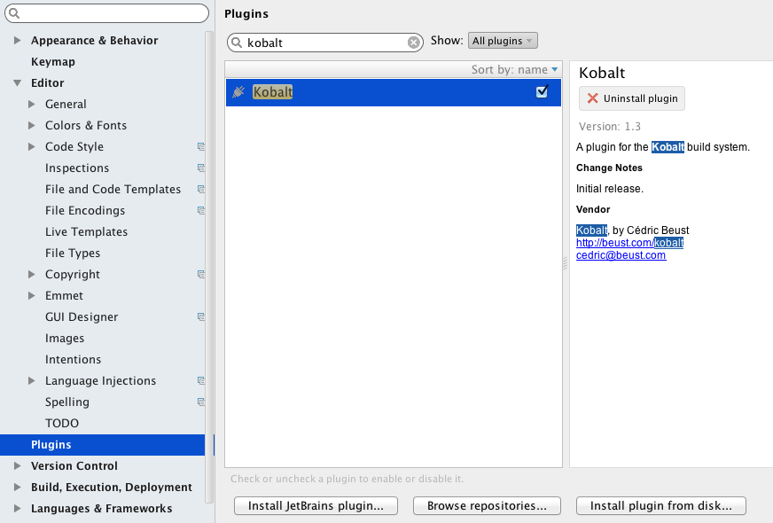
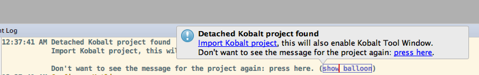
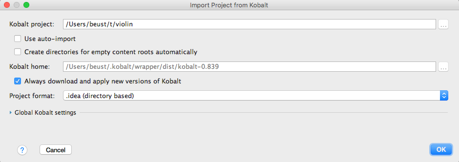
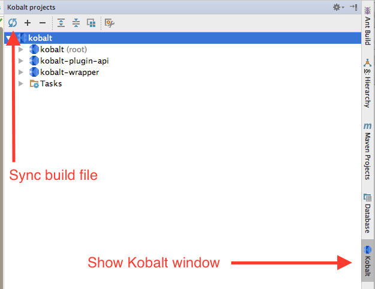
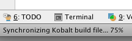
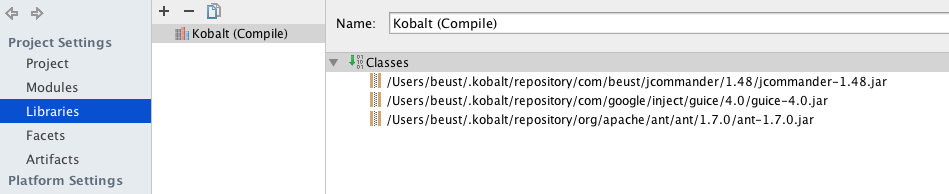
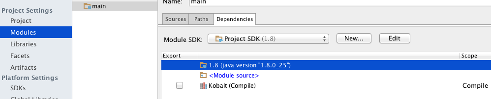
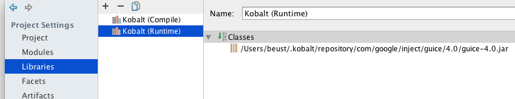
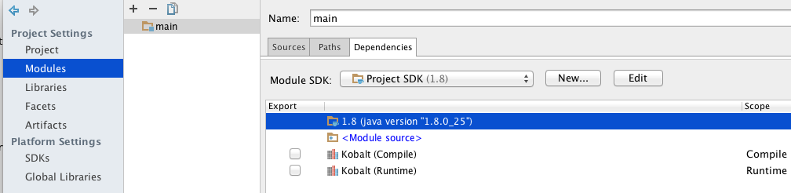
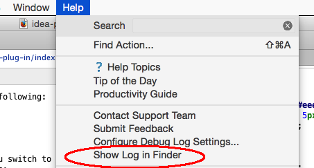

Open the "Plugins" section of the IDEA preferences and find the "Kobalt" plug-in.

Install it and restart IDEA. Next time you open a project with a Build.kt build file in it, IDEA
will offer to import it as a Kobalt project.


Once you accept, a new window will be available on the right side of your main IDEA window. Clicking it will reveal the whole Kobalt window. You can then click on the Sync icon in the upper left corner to update your dependencies:

The Kobalt IDEA plug-in offers the following features:
Build.kt
The plug-in will locate your kobalt/src/Build.kt file and automatically update your project's libraries and
dependencies to reflect it. For example, suppose you have the following dependencies:
compile("org.apache.ant:ant:1.7.0",
"com.google.inject:guice:4.0:no_aop",
"com.beust:jcommander:1.48")
Select the menu "Kobalt / Sync build file", wait for a few seconds as the status in the lower left corner updates:

Bring up the "Project structure" window for your project and you should see the following:

A new library has been created with the dependencies from your build file. If you switch to the Module section, you should see this library added as a dependency of your modules:

The plug-in understands other scopes as well (e.g. "provided", "runtime"). For example, let's move a dependency in the "runtime" section of the build file:
dependencies {
runtime("com.google.inject:guice:4.0:no_aop")
compile("org.apache.ant:ant:1.7.0",
"com.beust:jcommander:1.48")
}
The libraries are now the following:

Notice that you now have two different libraries and that they have both been added with the correct scope to your project:

The plug-in will automatically turn on auto-completion of your kobalt/src/Build.kt
file. Once this is
enabled, you can use everything you use on Kotlin files (auto completion, jump
to symbols, even refactorings).
The plug-in also understands the plugins() directive:
val bs = buildScript {
plugins("com.beust.kobalt:kobalt-line-count:0.17")
}
import com.beust.kobalt.plugin.linecount.lineCount
val lc = lineCount {
suffix = "**Plugin.kt"
}
The source code can be found on github. If you need to report a bug, please make sure you include the log file, which you can find under the "Help" menu:
